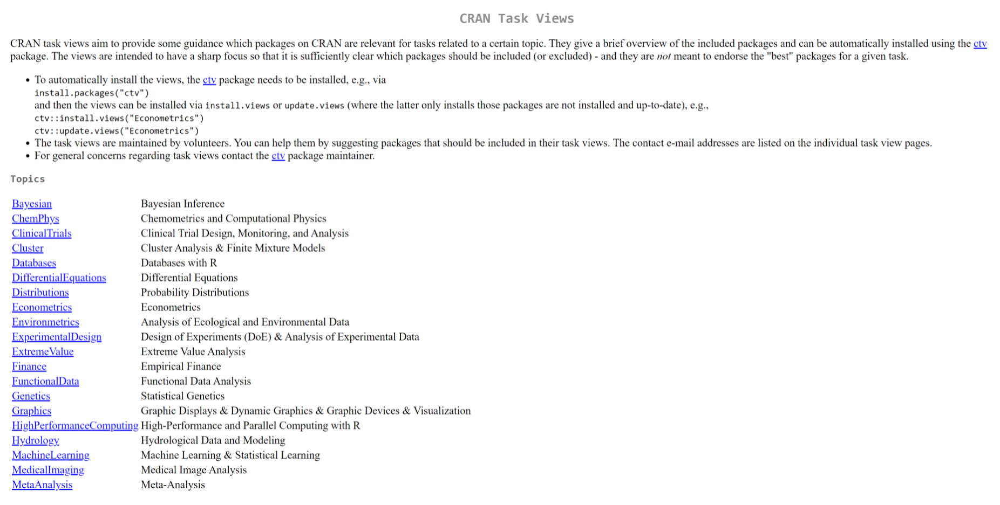
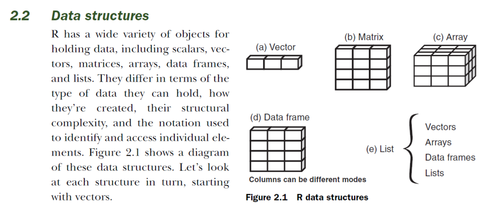
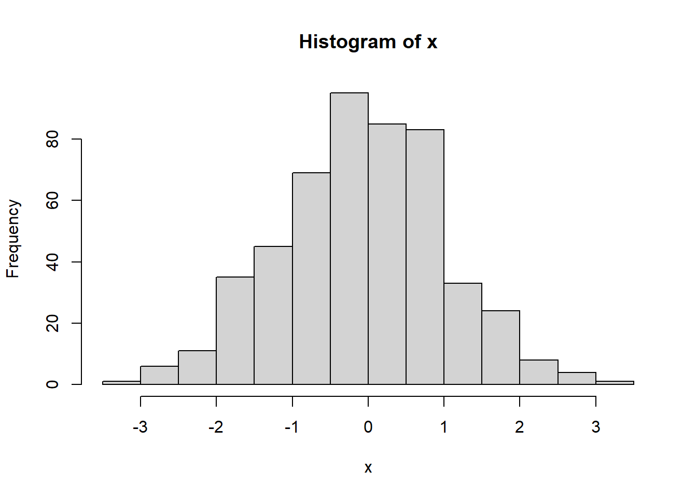

library(psych)Análise de dados em saúde mental
Introdução
R e R studio são softwares gratuitos.
R é baseado em sintaxe (linguagem), não em point-and-click.
Mais flexibilidade
Facilita gravar todas as transformações nos dados e análises
Objetos
R grava seus dados em ‘objetos’ - aba ‘environment’
Funções
São tipos especiais de objetos que realizam ações sobre outros objetos.
Muito da funcionalidade do R se dá através da aplicação de funções aos dados.
Exemplo: isTRUE(x) - teste de se ‘x’ é verdade
Operadores
São sinais que também realizam ações sobre objetos.
Aritméticos
| Operador | Descrição |
|---|---|
| + | adição |
| - | subtração |
| * | multiplicação |
| / | divisão |
| ^ ou ** | exponenciação / potenciação |
Lógicos e de comparação
| Operador | Descrição |
|---|---|
| < | menor que |
| <= | menor ou igual |
| > | maior que |
| >= | maior ou igual |
| == | exatamente igual a |
| != | diferente de |
| !x | não ‘x’ |
| x | y | ‘x’ ou ‘y’ |
| x & y | ‘x’ e ‘y’ |
Pacotes
O software básico do R já vem com várias funções pré-instaladas.
Para adicionar funções, é necessário a instalação de pacotes (próximo tópico).
Instalação
Instalando R e RStudio
- R: http://www.r-project.org
- RStudio: https://www.rstudio.com/
Instalando pacotes
Depois, é importante carregar o pacote para utilizá-lo:
Explorando pacotes
Esta página permite explorar os pacotes, por tópicos: https://cran.r-project.org/web/views/

Algumas funções importantes
Comentário
O símbolo # é utilizado para fazer comentários no seu código.
# Isto é um comentário.Atribuir
O símbolo <- é utilizado para atribuir o que quer que esteja na direita ao objeto à esquerda.
# Atribuindo valor '1' a x
x <- 1
# Visualizando
x[1] 1# Atribuindo valor "1+2"
x <- 1+2
x[1] 3# Verificando se x é menor que 2
isTRUE(x<2)[1] FALSERepare que para verificar o resultado, basta escrever ‘x’, e o programa devolve que x é 1.
Concatenar
A função “c()” irá concatenar valores/argumentos incluídos na função.
# Concatenando valores no objeto 'meus.dados'
meus.dados <- c(1, 2, 3)
# Visualizando
meus.dados[1] 1 2 3Existem duas variações dessa função: cbind() e rbind(). A primeira combina objetos como colunas, a segunda como linhas. Exemplo:
# Criando vetores
sexo <- c("mas", "fem", "mas", "fem", "mas")
idade <- c(12, 21, 33, 25, 36)
status_estudante <- c(TRUE, FALSE, TRUE, FALSE, TRUE)
# Concatenando como colunas diferentes
meus.dados <- cbind(sexo, idade, status_estudante)
# Verificando a estrutura
str(meus.dados) chr [1:5, 1:3] "mas" "fem" "mas" "fem" "mas" "12" "21" "33" "25" "36" ...
- attr(*, "dimnames")=List of 2
..$ : NULL
..$ : chr [1:3] "sexo" "idade" "status_estudante"# A estrutura não parece correta... melhor salvar como data.frame
meus.dados <- data.frame(sexo, idade, status_estudante)
str(meus.dados)'data.frame': 5 obs. of 3 variables:
$ sexo : chr "mas" "fem" "mas" "fem" ...
$ idade : num 12 21 33 25 36
$ status_estudante: logi TRUE FALSE TRUE FALSE TRUEVimos que a função data.frame também é importante, por isso vamos explorá-la mais adiante.
Ajuda
A função “help()” traz uma página que descreve a função, seus argumentos e dá alguns exemplos.
Exemplos
A função “example()”
# Solicitando exemplo da funcão "mean"
example("mean")
mean> x <- c(0:10, 50)
mean> xm <- mean(x)
mean> c(xm, mean(x, trim = 0.10))
[1] 8.75 5.50Importanto dados
Dados incluídos nos pacotes
Através do exemplo acima, vimos um exemplo de dados que já vieram com um pacote. O conjunto de dados “HolzingerSwineford1939”.
help("mtcars")starting httpd help server ... done“The data was extracted from the 1974 Motor Trend US magazine, and comprises fuel consumption and 10 aspects of automobile design and performance for 32 automobiles (1973–74 models).”
Para carregar os dados, digite data()
data(mtcars)Se quiser ter uma ideia de todos os bancos de dados disponíveis nos pacotes que já estão carregados, digite data()
data()Dados de uma fonte .csv ou .txt
Geralmente, os dados são armazenados em arquivos externos. A melhor maneira é utilizando o formato .csv. Para isso, é necessário se lembrar de algumas sugestões:
Codifique todos os “missing” como NA
Certifique-se de que nenhuma variável possui espaços. Utilize ponto ou underline. Exemplo: faixa.etaria ou faixa_etaria
É interessante não colocar acentos, no caso da língua portuguesa
Lembre-se de registrar decimais com ponto, e não com vírgula.
Depois que os dados estiverem salvos no computador, digite:
A função acima carrega o arquivo através de uma caixa de diálogo, mas você pode digitar a localização, entre aspas, no lugar de “file.choose()”.
O argumento “header = TRUE” indica que a primeira linha é o nome da variável.
O argumento “sep =”,““” indica que as colunas estão separadas por vírgula. Se necessário, coloque “sep =”;“” quando as colunas forem separadas por ponto e vírgula.
Ou, você pode selecionar diretamente o arquivo na aba “files”.
Dados de outros programas (SAS, SPSS, Stata, etc.)
Para carregar dados provenientes de outros programas, é mais fácil procurar pelo arquivo na aba “files”.
Estruturas de dados
Quando você carrega um conjunto de dados através da função read.table, eles ficam gravados como um objeto data.frame.
No R, existem 5 tipos diferentes de estruturas para os dados:
Vector (vetor): são arranjos uni-dimensionais que podem conter dados numéricos, caracteres ou lógicos. São chamados também de vetor atômico (atomic vectors).
Matrix (matriz): possui duas dimensões de dados (numéricos, caracteres ou lógicos).
Array (arranjo): são como matrizes, porém podem ter mais de duas dimensões.
Data frame (conjunto de dados): é a típica tabela que você encontra em outros programas. Podem conter diferentes tipos de dados.
List (lista): coleção ordenada de objetos de diversos tipos, possivelmente não relacionados.
A figura 2.2 do livro “R in Action” mostra a diferença entre essas estruturas:

Como o data frame é o tipo mais comum de organização dos dados, vamos criar um:
# Exemplo adaptado do livro "R in Action"
patientID <- c(1, 1, 2, 3, 4, 5, 6)
idade <- c(25, 25, 34, 28, 52, 44, 36)
diabetes <- c("Tipo1", "Tipo1", "Tipo2", "Tipo1", "Tipo1", "Tipo2", "Tipo2")
status <- c("Bom", "Bom", "Bom", "Ruim", "Bom", "Ruim", "Ruim")
glicemia <- c(105, 105, 112, 240, 121, 330, 450)
dados.pacientes <- data.frame(patientID, idade, diabetes, status, glicemia)
dados.pacientes # Vemos que a primeira observação está repetida. Vamos ver depois como deletar essa observação. patientID idade diabetes status glicemia
1 1 25 Tipo1 Bom 105
2 1 25 Tipo1 Bom 105
3 2 34 Tipo2 Bom 112
4 3 28 Tipo1 Ruim 240
5 4 52 Tipo1 Bom 121
6 5 44 Tipo2 Ruim 330
7 6 36 Tipo2 Ruim 450É útil também utilizar a função str() para verificar a estrutura dos dados:
str(dados.pacientes)'data.frame': 7 obs. of 5 variables:
$ patientID: num 1 1 2 3 4 5 6
$ idade : num 25 25 34 28 52 44 36
$ diabetes : chr "Tipo1" "Tipo1" "Tipo2" "Tipo1" ...
$ status : chr "Bom" "Bom" "Bom" "Ruim" ...
$ glicemia : num 105 105 112 240 121 330 450No exemplo acima, podemos ver dois tipos de variável: chr (character) e num (numeric).
Tipos de dados
O R comporta 6 tipos básicos de dados:
Caractere (character). Ex. “fem”, “f”, “mas”, “m”
Numérico (numeric): Ex. 2, 3.5, 734
Número inteiro (integer): Ex. 1L, 2L, 3L (a letra L mostra do R para salvar como inteiro)
Lógico (logical): TRUE, FALSE
Número complexo (complex): Ex. 1+4i
Fatores (factors)
R in action
Dados categóricos podem ser codificados categoricamente (ex. “Masculino”, “Feminino”), ou através de números (ex. Masculino=0, Feminino=1). O R classifica esses dados como níveis (levels) de um fator (factor).
# Verificando os níveis da variável diabetes, que é um fator:
factor(diabetes)[1] Tipo1 Tipo1 Tipo2 Tipo1 Tipo1 Tipo2 Tipo2
Levels: Tipo1 Tipo2# Vamos codificar uma nova variável, em que Masculino=0, Feminino=1:
sexo <- c(0, 0, 1, 1, 1, 0, 0)
# O R compreende que essa variável é contínua. Para atribuir a codificação, utilize o código:
sexo <- factor(x = sexo, levels =0:1, labels = c("Mas", "Fem"))
sexo # Verificando[1] Mas Mas Fem Fem Fem Mas Mas
Levels: Mas Fem# Salvando no meu banco de dados, usando a função cbind()
dados.pacientes <- cbind(dados.pacientes, sexo)
# Visualizando
dados.pacientes patientID idade diabetes status glicemia sexo
1 1 25 Tipo1 Bom 105 Mas
2 1 25 Tipo1 Bom 105 Mas
3 2 34 Tipo2 Bom 112 Fem
4 3 28 Tipo1 Ruim 240 Fem
5 4 52 Tipo1 Bom 121 Fem
6 5 44 Tipo2 Ruim 330 Mas
7 6 36 Tipo2 Ruim 450 MasDados organizados (tidy data)
Happy families are all alike; every unhappy family is unhappy in its own way — Leo Tolstoy
Conjuntos de dados organizados são uma maneira padronizada de vincular a estrutura (o layout físico) com a sua semântica (significado).
A estrutura de dados organizados é sempre a mesma:
Cada coluna é uma variável.
Cada linha é uma observação (exceto a primeira)
Cada célula é um único valor
Simulando dados
O R também possui algumas funções para simular dados. Por exemplo:
# Criando uma simulação de 500 obs. de uma distribuição normal com média zero e desvio padrão de 1.
x <- rnorm(500, m=0, sd=1)
# Criando um histograma de x
hist(x)
Manipulando dados
Acessando variáveis
Vamos utilizar aqui o banco criado acima, “dados.pacientes”.
Para acessar colunas específicas, utilizar o cifrão ($). Podemos também utilizar a função “anexar”, attach(), que faz com que as variáveis fiquem disponíveis diretamente. Por exemplo:
# Antes de começar, vamos remover as variáveis do ambiente de trabalho.
rm(patientID, idade, diabetes, status, glicemia, sexo)
# Visualizando
dados.pacientes$idade[1] 25 25 34 28 52 44 36# Solicitando a média e desvio padrão
mean(dados.pacientes$idade)[1] 34.85714sd(dados.pacientes$idade)[1] 10.17232# Com a função attach
attach(dados.pacientes)
idade[1] 25 25 34 28 52 44 36status[1] "Bom" "Bom" "Bom" "Ruim" "Bom" "Ruim" "Ruim"mean(idade)[1] 34.85714# Para 'desanexar' as variáveis. Lembrar de colocar entre aspas.
detach("dados.pacientes")Para acessar elementos (observações) específicos, utilizar [ ]:
# Visualizando a primeira observação da variável idade
dados.pacientes$idade[1][1] 25# Visualizando a segunda observação da variável diabetes
dados.pacientes$diabetes[2][1] "Tipo1"Alterando e removendo valores:
# Alterando a segunda observação da variável diabetes
dados.pacientes$diabetes[2] <- "Tipo1"
# Para remover valores, defina como NA:
dados.pacientes$idade[1] <- NA
# Visualizando
dados.pacientes patientID idade diabetes status glicemia sexo
1 1 NA Tipo1 Bom 105 Mas
2 1 25 Tipo1 Bom 105 Mas
3 2 34 Tipo2 Bom 112 Fem
4 3 28 Tipo1 Ruim 240 Fem
5 4 52 Tipo1 Bom 121 Fem
6 5 44 Tipo2 Ruim 330 Mas
7 6 36 Tipo2 Ruim 450 Mas# Para deletar todos os casos com NA, utilize a função na.omit()
dados.pacientes <- na.omit(dados.pacientes)
dados.pacientes # Agora o primeiro paciente foi excluído do banco de dados. patientID idade diabetes status glicemia sexo
2 1 25 Tipo1 Bom 105 Mas
3 2 34 Tipo2 Bom 112 Fem
4 3 28 Tipo1 Ruim 240 Fem
5 4 52 Tipo1 Bom 121 Fem
6 5 44 Tipo2 Ruim 330 Mas
7 6 36 Tipo2 Ruim 450 MasEstatística descritiva
Aqui verificamos algumas funções para estatística descritiva de dados numéricos:
Média: mean()
Soma: sum()
Variância: var()
Desvio padrão: sd()
Entretanto, a melhor função é describe() do pacote psych. Podemos nos referir à função como describe::psych. Ou seja, utilizando “::” estamos dizendo que queremos utilizar a função describe do pacote psych (e não de outros pacotes, caso exista).
# Média
mean(dados.pacientes$idade)[1] 36.5# Soma
sum(dados.pacientes$idade)[1] 219# Variância
var(dados.pacientes$idade)[1] 101.5# Desvio padrão
sd(dados.pacientes$idade)[1] 10.07472# Estatística descritiva das variáveis quantitativas, usando a função "describe":
psych::describe(dados.pacientes$idade) vars n mean sd median trimmed mad min max range skew kurtosis se
X1 1 6 36.5 10.07 35 36.5 11.86 25 52 27 0.33 -1.65 4.11psych::describe(dados.pacientes$glicemia) vars n mean sd median trimmed mad min max range skew kurtosis se
X1 1 6 226.33 141.31 180.5 226.33 106.75 105 450 345 0.46 -1.69 57.69Para dados categóricos, devemos fazer uma tabela de frequência, utilizando a função table().
table(dados.pacientes$sexo)
Mas Fem
3 3 Estatística inferencial
Vamos fazer agora algumas estatísticas inferenciais básicas.
# Anexando as variáveis no ambiente de trabalho
attach(dados.pacientes)
# Correlação de Pearson entre duas variáveis
cor(idade, glicemia)[1] 0.08400605# Criando scores z
dados.pacientes$glicemia.z <- scale(glicemia)
# Verificando
dados.pacientes patientID idade diabetes status glicemia sexo glicemia.z
2 1 25 Tipo1 Bom 105 Mas -0.85860329
3 2 34 Tipo2 Bom 112 Fem -0.80906848
4 3 28 Tipo1 Ruim 240 Fem 0.09671081
5 4 52 Tipo1 Bom 121 Fem -0.74538087
6 5 44 Tipo2 Ruim 330 Mas 0.73358687
7 6 36 Tipo2 Ruim 450 Mas 1.58275496# Fazendo um teste-t para comparar médias de duas amostras
t.test(glicemia ~ sexo) # Não significativo
Welch Two Sample t-test
data: glicemia by sexo
t = 1.2575, df = 2.6477, p-value = 0.3081
alternative hypothesis: true difference in means between group Mas and group Fem is not equal to 0
95 percent confidence interval:
-237.9033 512.5700
sample estimates:
mean in group Mas mean in group Fem
295.0000 157.6667 t.test(glicemia ~ status) # Significativo
Welch Two Sample t-test
data: glicemia by status
t = -3.7266, df = 2.0232, p-value = 0.06392
alternative hypothesis: true difference in means between group Bom and group Ruim is not equal to 0
95 percent confidence interval:
-486.94966 32.28299
sample estimates:
mean in group Bom mean in group Ruim
112.6667 340.0000 # Para médias da mesma amostra (pareadas), o código seria:
# t.test(glicemia ~ status, paired = TRUE)
# Não vamos calcular, já que não se aplica.
# Testando variância entre grupos
bartlett.test(glicemia, status) # Não significativo, ou seja, as variâncias não são homogêneas.
Bartlett test of homogeneity of variances
data: glicemia and status
Bartlett's K-squared = 6.0414, df = 1, p-value = 0.01397# Fazendo uma regressão
lm.glicemia.idade <- lm(glicemia ~ idade)
summary(lm.glicemia.idade)
Call:
lm(formula = glicemia ~ idade)
Residuals:
1 2 3 4 5 6
-107.78 -111.39 23.68 -123.60 94.83 224.26
Coefficients:
Estimate Std. Error t value Pr(>|t|)
(Intercept) 183.324 263.055 0.697 0.524
idade 1.178 6.989 0.169 0.874
Residual standard error: 157.4 on 4 degrees of freedom
Multiple R-squared: 0.007057, Adjusted R-squared: -0.2412
F-statistic: 0.02843 on 1 and 4 DF, p-value: 0.8743detach("dados.pacientes")Gráficos
# boxplot(glicemia ~ status)
# plot(glicemia ~ idade)